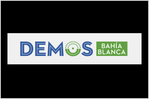
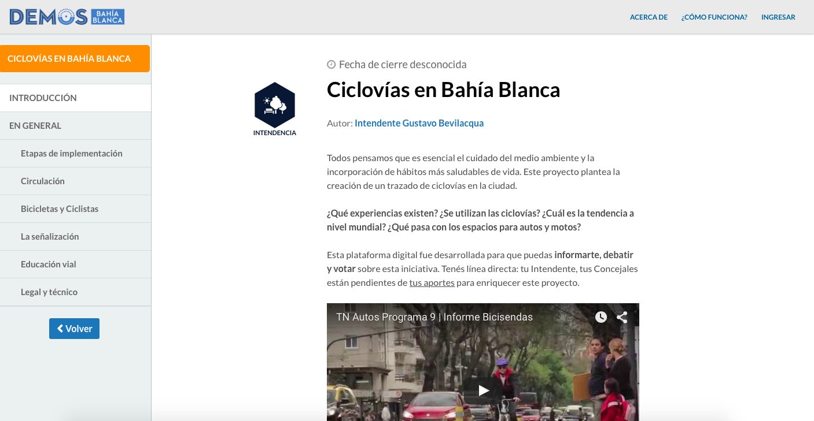

<!DOCTYPE html><html lang="en"><head><meta charset="utf-8"><title>Fundación Democracia en Red</title><meta content="Nos unimos para innovar donde nadie esta innovando aún, en el sistema político." name="description"><meta content="Pía Mancini @piamancini" name="author"><meta content="Ricardo Rauch @gravityonmars" name="author"><meta content="HAkIFHrAksbGkWhFocPXjNqA6JDUjF3V2dA0SLKBIYc" name="google-site-verification"><meta content="width=device-width, user-scalable=no, initial-scale=1.0, minimum-scale=1.0, maximum-scale=1.0" name="viewport"><meta property="og:title" content="Fundación Democracia en Red"><meta property="og:description" content="Nos unimos para innovar donde nadie esta innovando aún, en el sistema político."><meta property="og:type" content="website"><meta property="og:image" content="logo-card.png"><meta property="og:url" content="http://democraciaenred.org"><meta name="twitter:card" content="summary"><meta name="twitter:site" content="@fundacionder"><meta name="twitter:title" content="Fundación Democracia en Red"><meta name="twitter:description" content="Nos unimos para innovar donde nadie esta innovando aún, en el sistema político."><meta name="twitter:image" content="logo-card.png"><link href="http://netdna.bootstrapcdn.com/twitter-bootstrap/2.3.2/css/bootstrap-combined.min.css" rel="stylesheet"><link href="stylesheets/fonts/social.css" rel="stylesheet"><link href="stylesheets/app.css" rel="stylesheet"><link href="images/der-favicon.ico" rel="shortcut icon"><script src="http://ajax.googleapis.com/ajax/libs/jquery/1.8.1/jquery.min.js" type="text/javascript"></script><script src="javascripts/vendor/jquery.scrollTo.min.js" type="text/javascript"></script><script src="http://netdna.bootstrapcdn.com/twitter-bootstrap/2.3.2/js/bootstrap.min.js" type="text/javascript"></script><link href="http://fonts.googleapis.com/css?family=Open+Sans:400,700,800" rel="stylesheet" type="text/css"></head></html><body data-offset="120" data-spy="scroll" data-target=".navbar"><header class="site-header clearfix"><div class="navbar navbar-inverse navbar-fixed-top"><div class="navbar-inner"><div class="container"><h1><a href="#splash" title="Democracia en Red">Democracia en Red</a></h1><ul class="nav languages"><li><a href="/index-en.html" title="">EN</a></li><li class="selected"><a href="/index.html" title="">ES</a></li></ul><div class="social"></div><ul class="nav nav-collapse collapse"><li class="hide active"><a href="#splash" title="">Somos Red</a></li><li><a href="#proyectos" title="">Proyectos</a></li><li><a href="#quienes-somos" title="">Quiénes somos</a></li><li><a href="#press" title="">Prensa</a></li><li><a href="#collaborate" title="">Colaborar</a></li></ul></div></div></div></header><section id="splash" class="splash section"><div class="section-title"><div class="section-content"><p></p><div class="splash-title"><p class="description">Pensamos que internet puede transformar el sistema político. Con más y mejor participación ciudadana, podemos pasar de la agitación a la construcción.</p><a href="http://twitter.com/intent/tweet?text=Pasemos+de+la+agitaci%C3%B3n+a+la+construcci%C3%B3n.+Cambiemos+la+herramienta.+@Democracyos" target="_blank" class="btn btn-kickstarter share-twitter"><span>Difundamos</span></a></div></div></div><a href="#argentina" class="arrow-down"></a></section><section id="argentina" class="argentina section"><div class="argentina-content clearfix"><div class="video-buenos-aires"><iframe src="https://embed-ssl.ted.com/talks/lang/es/pia_mancini_how_to_upgrade_democracy_for_the_internet_era.html" width="100%" height="100%" frameborder="0" scrolling="no" webkitAllowFullScreen mozallowfullscreen allowFullScreen></iframe></div></div></section><section id="proyectos" class="proyectos section"><div class="section-title"><h2>Proyectos</h2></div><ul class="inline projects"><li data-description="DemocracyOS es una herramienta de código abierto pensada para facilitar la participación ciudadana en procesos de toma de decisión. Es la manifestación tecnológica de nuestra misión principal: acercar el sistema político a las tecnologías y hábitos de este siglo." class="project-card"><a href="#" class="expand"></a><div class="description-overlay"><button class="close">×</button><div class="screenshots"></div><div class="text"><div class="title"><h4>DemocracyOS</h4></div><p>DemocracyOS es una herramienta de código abierto pensada para facilitar la participación ciudadana en procesos de toma de decisión. Es la manifestación tecnológica de nuestra misión principal: acercar el sistema político a las tecnologías y hábitos de este siglo.</p><div class="links"><a href="http://dos.partidodelared.org/" target="_blank" class="btn">Partido de la Red</a></div></div></div></li><li data-description="Civic Stack es un repositorio de aplicaciones de código abierto diseñadas para generar impacto cívico. Fue pensado colaborativamente como una ventana para agrupar y facilitar el acceso a tecnologías con el objetivo de empoderar ciudadanos." class="project-card"><a href="#" class="expand"></a><div class="description-overlay"><button class="close">×</button><div class="screenshots"></div><div class="text"><div class="title"><h4>Civic Stack</h4></div><p>Civic Stack es un repositorio de aplicaciones de código abierto diseñadas para generar impacto cívico. Fue pensado colaborativamente como una ventana para agrupar y facilitar el acceso a tecnologías con el objetivo de empoderar ciudadanos.</p><div class="links"><a href="http://www.civicstack.org" target="_blank" class="btn">civicstack.org</a></div></div></div></li><li data-description="Demos Legislatura Porteña es un proyecto que hicimos en colaboración con la Legislatura Porteña. La experiencia permitió a todos los ciudadanos de Buenos Aires informarse, debatir y votar sobre 3 proyectos de ley elegidos por ellos mismos. Una apuesta institucional por la idea de que “más, pensamos mejor”." class="project-card"><a href="#" class="expand"></a><div class="description-overlay"><button class="close">×</button><div class="screenshots"></div><div class="text"><div class="title"><h4>Demos</h4></div><p>Demos Legislatura Porteña es un proyecto que hicimos en colaboración con la Legislatura Porteña. La experiencia permitió a todos los ciudadanos de Buenos Aires informarse, debatir y votar sobre 3 proyectos de ley elegidos por ellos mismos. Una apuesta institucional por la idea de que “más, pensamos mejor”.</p><div class="links"><a href="http://demos.legislatura.gov.ar" target="_blank" class="btn">demos.legislatura.gov.ar</a></div></div></div></li><li data-description="Demos Bahía Blanca es una iniciativa en colaboración con la Agencia de Gobierno Abierto del Municipio de Bahía Blanca. Encaramos el desafío de usar la tecnología para abrir ordenanzas y decretos para someterlos a discusión de todos los ciudadanos." class="project-card"><a href="#" class="expand"></a><div class="description-overlay"><button class="close">×</button><div class="screenshots"></div><div class="text"><div class="title"><h4>Demos Bahia Blanca</h4></div><p>Demos Bahía Blanca es una iniciativa en colaboración con la Agencia de Gobierno Abierto del Municipio de Bahía Blanca. Encaramos el desafío de usar la tecnología para abrir ordenanzas y decretos para someterlos a discusión de todos los ciudadanos.</p><div class="links"><a href="http://bahiablanca.democracyos.org" target="_blank" class="btn">bahiablanca.democracyos.org</a></div></div></div></li><li data-description="SOLE crea entornos de aprendizaje autoorganizados, basados en la pedagogía de Sugata Mitra, que incluyen muchos chicos, algunas computadoras y una pregunta. Internet transforma la forma de aprender, también, en escuelas de la Ciudad de Buenos Aires." class="project-card"><a href="#" class="expand"></a><div class="description-overlay"><button class="close">×</button><div class="screenshots"></div><div class="text"><div class="title"><h4>Proyecto SOLE</h4></div><p>SOLE crea entornos de aprendizaje autoorganizados, basados en la pedagogía de Sugata Mitra, que incluyen muchos chicos, algunas computadoras y una pregunta. Internet transforma la forma de aprender, también, en escuelas de la Ciudad de Buenos Aires.</p><div class="links"><a href="http://www.soleargentina.org" target="_blank" class="btn">soleargentina.org</a></div></div></div></li><li data-description="Academia es un espacio de encuentro con artistas, investigadores y personas que vienen pensando y experimentando el cruce entre el poder y el mundo digital. La democracia en la era de internet trae nuevas inquietudes y escenarios que asombran." class="project-card"><a href="#" class="expand"></a><div class="description-overlay"><button class="close">×</button><div class="screenshots"></div><div class="text"><div class="title"><h4>Academia</h4></div><p>Academia es un espacio de encuentro con artistas, investigadores y personas que vienen pensando y experimentando el cruce entre el poder y el mundo digital. La democracia en la era de internet trae nuevas inquietudes y escenarios que asombran.</p><div class="links"></div></div></div></li><li data-description="UPDATE nace en São Paulo, con un grupo de activistas que empezó a preguntarse si es posible construir una nueva categoría dentro del activismo social: los Hackers de la Política. Nos unimos para mapear y conectar activistas que usan Internet para cuestionar y transformar la forma en que se hace política dentro y fuera de las instituciones." class="project-card"><a href="#" class="expand"></a><div class="description-overlay"><button class="close">×</button><div class="screenshots"></div><div class="text"><div class="title"><h4>Update</h4></div><p>UPDATE nace en São Paulo, con un grupo de activistas que empezó a preguntarse si es posible construir una nueva categoría dentro del activismo social: los Hackers de la Política. Nos unimos para mapear y conectar activistas que usan Internet para cuestionar y transformar la forma en que se hace política dentro y fuera de las instituciones.</p><div class="links"><a href="http://demos.legislatura.gov.ar" target="_blank" class="btn">demos.legislatura.gov.ar</a></div></div></div></li><li data-description="TRES POR TRES es un ciclo de conversaciones de muchos a muchos, con temáticas específicas. Tres eventos y tres organizaciones discuten, sin oradores y sin palestras, el impacto de la tecnología en la política argentina." class="project-card"><a href="#" class="expand"></a><div class="description-overlay"><button class="close">×</button><div class="screenshots"></div><div class="text"><div class="title"><h4>Tres por tres</h4></div><p>TRES POR TRES es un ciclo de conversaciones de muchos a muchos, con temáticas específicas. Tres eventos y tres organizaciones discuten, sin oradores y sin palestras, el impacto de la tecnología en la política argentina.</p><div class="links"></div></div></div></li></ul></section><section id="quienes-somos" class="who-we-are section clearfix"><div class="section-title"><h2>Quienes Somos</h2><div class="clearfix"><p class="description">Venimos de distintos lugares, nos encontramos porque tenemos cosas en común: todos usamos internet, creemos en la política y vemos un sistema democrático que necesita actualizarse. Fundamentalmente, coincidimos en una cosa: cuantas más voces sean tenidas en cuenta, mejor democracia vamos a tener. Somos artistas, investigadores, hackers, diseñadores, activistas, emprendedores. Somos humanos. Nos gusta pensar sistemas.</p></div></div></section><section id="team" class="team section clearfix"><div class="section-title"><h2>Equipo</h2></div><div class="team-avatars"><div class="avatar"><div class="picture"></div><div class="content"><h4 class="name">Agustín Frizzera</h4><p class="role">Software engineer</p><p class="bio">He is computer scientist. Thinks JavaScript rules, but without classes. Likes to eat milanesa.</p><div class="social"><a href="http://www.twitter.com/jfresco82" target="_blank"><span class="flaticon social flaticon-twitter"></span></a><a href="http://www.github.com/jfresco" target="_blank"><span class="flaticon social flaticon-github"></span></a><a href="http://www.facebook.com/jose.fresco" target="_blank"><span class="flaticon social flaticon-facebook"></span></a><a href="https://www.linkedin.com/in/jose.fresco" target="_blank"><span class="flaticon social flaticon-linkedin"></span></a><a href="mailto:jose@democraciaenred.org" target="_blank"><span class="flaticon social flaticon-email"></span></a></div></div></div><div class="avatar"><div class="picture"></div><div class="content"><h4 class="name">Guido Vilariño</h4><p class="role">Software engineer</p><p class="bio">He is computer scientist. Thinks JavaScript rules, but without classes. Likes to eat milanesa.</p><div class="social"><a href="http://www.twitter.com/jfresco82" target="_blank"><span class="flaticon social flaticon-twitter"></span></a><a href="http://www.github.com/jfresco" target="_blank"><span class="flaticon social flaticon-github"></span></a><a href="http://www.facebook.com/jose.fresco" target="_blank"><span class="flaticon social flaticon-facebook"></span></a><a href="https://www.linkedin.com/in/jose.fresco" target="_blank"><span class="flaticon social flaticon-linkedin"></span></a></div></div></div><div class="avatar"><div class="picture"></div><div class="content"><h4 class="name">Esteban Brenman</h4><p class="role">Software engineer</p><p class="bio">He is computer scientist. Thinks JavaScript rules, but without classes. Likes to eat milanesa.</p><div class="social"><a href="http://www.twitter.com/jfresco82" target="_blank"><span class="flaticon social flaticon-twitter"></span></a><a href="http://www.github.com/jfresco" target="_blank"><span class="flaticon social flaticon-github"></span></a><a href="http://www.facebook.com/jose.fresco" target="_blank"><span class="flaticon social flaticon-facebook"></span></a><a href="https://www.linkedin.com/in/jose.fresco" target="_blank"><span class="flaticon social flaticon-linkedin"></span></a></div></div></div><div class="avatar"><div class="picture"></div><div class="content"><h4 class="name">Gastón Silberman</h4><p class="role">Software engineer</p><p class="bio">He is computer scientist. Thinks JavaScript rules, but without classes. Likes to eat milanesa.</p><div class="social"><a href="http://www.twitter.com/jfresco82" target="_blank"><span class="flaticon social flaticon-twitter"></span></a><a href="http://www.github.com/jfresco" target="_blank"><span class="flaticon social flaticon-github"></span></a><a href="http://www.facebook.com/jose.fresco" target="_blank"><span class="flaticon social flaticon-facebook"></span></a><a href="https://www.linkedin.com/in/jose.fresco" target="_blank"><span class="flaticon social flaticon-linkedin"></span></a></div></div></div><div class="avatar"><div class="picture"></div><div class="content"><h4 class="name">Sebastián Fernández</h4><p class="role">Software engineer</p><p class="bio">He is computer scientist. Thinks JavaScript rules, but without classes. Likes to eat milanesa.</p><div class="social"><a href="http://www.twitter.com/jfresco82" target="_blank"><span class="flaticon social flaticon-twitter"></span></a><a href="http://www.github.com/jfresco" target="_blank"><span class="flaticon social flaticon-github"></span></a><a href="http://www.facebook.com/jose.fresco" target="_blank"><span class="flaticon social flaticon-facebook"></span></a><a href="https://www.linkedin.com/in/jose.fresco" target="_blank"><span class="flaticon social flaticon-linkedin"></span></a></div></div></div><div class="avatar"><div class="picture"></div><div class="content"><h4 class="name">Matías Lescano</h4><p class="role">Software engineer</p><p class="bio">He is computer scientist. Thinks JavaScript rules, but without classes. Likes to eat milanesa.</p><div class="social"><a href="http://www.twitter.com/jfresco82" target="_blank"><span class="flaticon social flaticon-twitter"></span></a><a href="http://www.github.com/jfresco" target="_blank"><span class="flaticon social flaticon-github"></span></a><a href="http://www.facebook.com/jose.fresco" target="_blank"><span class="flaticon social flaticon-facebook"></span></a><a href="https://www.linkedin.com/in/jose.fresco" target="_blank"><span class="flaticon social flaticon-linkedin"></span></a></div></div></div><div class="avatar"><div class="picture"></div><div class="content"><h4 class="name">Florencia Polimeni</h4><p class="role">Software engineer</p><p class="bio">He is computer scientist. Thinks JavaScript rules, but without classes. Likes to eat milanesa.</p><div class="social"><a href="http://www.twitter.com/jfresco82" target="_blank"><span class="flaticon social flaticon-twitter"></span></a><a href="http://www.github.com/jfresco" target="_blank"><span class="flaticon social flaticon-github"></span></a><a href="http://www.facebook.com/jose.fresco" target="_blank"><span class="flaticon social flaticon-facebook"></span></a><a href="https://www.linkedin.com/in/jose.fresco" target="_blank"><span class="flaticon social flaticon-linkedin"></span></a></div></div></div><div class="avatar"><div class="picture"></div><div class="content"><h4 class="name">Mair Williams</h4><p class="role">Software engineer</p><p class="bio">He is computer scientist. Thinks JavaScript rules, but without classes. Likes to eat milanesa.</p><div class="social"><a href="http://www.twitter.com/jfresco82" target="_blank"><span class="flaticon social flaticon-twitter"></span></a><a href="http://www.github.com/jfresco" target="_blank"><span class="flaticon social flaticon-github"></span></a><a href="http://www.facebook.com/jose.fresco" target="_blank"><span class="flaticon social flaticon-facebook"></span></a><a href="https://www.linkedin.com/in/jose.fresco" target="_blank"><span class="flaticon social flaticon-linkedin"></span></a></div></div></div><div class="avatar"><div class="picture"></div><div class="content"><h4 class="name">Sebastián Ghelerman</h4><p class="role">Software engineer</p><p class="bio">He is computer scientist. Thinks JavaScript rules, but without classes. Likes to eat milanesa.</p><div class="social"><a href="http://www.twitter.com/jfresco82" target="_blank"><span class="flaticon social flaticon-twitter"></span></a><a href="http://www.github.com/jfresco" target="_blank"><span class="flaticon social flaticon-github"></span></a><a href="http://www.facebook.com/jose.fresco" target="_blank"><span class="flaticon social flaticon-facebook"></span></a><a href="https://www.linkedin.com/in/jose.fresco" target="_blank"><span class="flaticon social flaticon-linkedin"></span></a></div></div></div><div class="avatar"><div class="picture"></div><div class="content"><h4 class="name">Gonzalo Argüello</h4><p class="role">Software engineer</p><p class="bio">He is computer scientist. Thinks JavaScript rules, but without classes. Likes to eat milanesa.</p><div class="social"><a href="http://www.twitter.com/jfresco82" target="_blank"><span class="flaticon social flaticon-twitter"></span></a><a href="http://www.github.com/jfresco" target="_blank"><span class="flaticon social flaticon-github"></span></a><a href="http://www.facebook.com/jose.fresco" target="_blank"><span class="flaticon social flaticon-facebook"></span></a><a href="https://www.linkedin.com/in/jose.fresco" target="_blank"><span class="flaticon social flaticon-linkedin"></span></a></div></div></div><div class="avatar"><div class="picture"></div><div class="content"><h4 class="name">Mariano Gómez Bidondo</h4><p class="role">Software engineer</p><p class="bio">He is computer scientist. Thinks JavaScript rules, but without classes. Likes to eat milanesa.</p><div class="social"><a href="http://www.twitter.com/jfresco82" target="_blank"><span class="flaticon social flaticon-twitter"></span></a><a href="http://www.github.com/jfresco" target="_blank"><span class="flaticon social flaticon-github"></span></a><a href="http://www.facebook.com/jose.fresco" target="_blank"><span class="flaticon social flaticon-facebook"></span></a><a href="https://www.linkedin.com/in/jose.fresco" target="_blank"><span class="flaticon social flaticon-linkedin"></span></a></div></div></div><div class="avatar"><div class="picture"></div><div class="content"><h4 class="name">José Fresco</h4><p class="role">Software engineer</p><p class="bio">He is computer scientist. Thinks JavaScript rules, but without classes. Likes to eat milanesa.</p><div class="social"><a href="http://www.twitter.com/jfresco82" target="_blank"><span class="flaticon social flaticon-twitter"></span></a><a href="http://www.github.com/jfresco" target="_blank"><span class="flaticon social flaticon-github"></span></a></div></div></div><div class="avatar"><div class="picture"></div><div class="content"><h4 class="name">Sacha Lifszyc</h4><p class="role">Software engineer</p><p class="bio">He is computer scientist. Thinks JavaScript rules, but without classes. Likes to eat milanesa.</p><div class="social"><a href="http://www.twitter.com/jfresco82" target="_blank"><span class="flaticon social flaticon-twitter"></span></a><a href="http://www.github.com/jfresco" target="_blank"><span class="flaticon social flaticon-github"></span></a><a href="http://www.facebook.com/jose.fresco" target="_blank"><span class="flaticon social flaticon-facebook"></span></a><a href="https://www.linkedin.com/in/jose.fresco" target="_blank"><span class="flaticon social flaticon-linkedin"></span></a></div></div></div><div class="avatar"><div class="picture"></div><div class="content"><h4 class="name">Don Powa</h4><p class="role">Software engineer</p><p class="bio">He is computer scientist. Thinks JavaScript rules, but without classes. Likes to eat milanesa.</p><div class="social"><a href="http://www.twitter.com/jfresco82" target="_blank"><span class="flaticon social flaticon-twitter"></span></a><a href="http://www.github.com/jfresco" target="_blank"><span class="flaticon social flaticon-github"></span></a><a href="http://www.facebook.com/jose.fresco" target="_blank"><span class="flaticon social flaticon-facebook"></span></a><a href="https://www.linkedin.com/in/jose.fresco" target="_blank"><span class="flaticon social flaticon-linkedin"></span></a></div></div></div><div class="avatar"><div class="picture"></div><div class="content"><h4 class="name">Mariano Lopata</h4><p class="role">Software engineer</p><p class="bio">He is computer scientist. Thinks JavaScript rules, but without classes. Likes to eat milanesa.</p><div class="social"><a href="http://www.twitter.com/jfresco82" target="_blank"><span class="flaticon social flaticon-twitter"></span></a><a href="http://www.github.com/jfresco" target="_blank"><span class="flaticon social flaticon-github"></span></a><a href="http://www.facebook.com/jose.fresco" target="_blank"><span class="flaticon social flaticon-facebook"></span></a><a href="https://www.linkedin.com/in/jose.fresco" target="_blank"><span class="flaticon social flaticon-linkedin"></span></a></div></div></div><div class="avatar"><div class="picture"></div><div class="content"><h4 class="name">Liliana Haydee Jalabe</h4><p class="role">Software engineer</p><p class="bio">He is computer scientist. Thinks JavaScript rules, but without classes. Likes to eat milanesa.</p><div class="social"><a href="http://www.twitter.com/jfresco82" target="_blank"><span class="flaticon social flaticon-twitter"></span></a><a href="http://www.github.com/jfresco" target="_blank"><span class="flaticon social flaticon-github"></span></a><a href="http://www.facebook.com/jose.fresco" target="_blank"><span class="flaticon social flaticon-facebook"></span></a><a href="https://www.linkedin.com/in/jose.fresco" target="_blank"><span class="flaticon social flaticon-linkedin"></span></a></div></div></div><div class="avatar"><div class="picture"></div><div class="content"><h4 class="name">Ana Lis Rodríguez Nardelli</h4><p class="role">Software engineer</p><p class="bio">He is computer scientist. Thinks JavaScript rules, but without classes. Likes to eat milanesa.</p><div class="social"><a href="http://www.twitter.com/jfresco82" target="_blank"><span class="flaticon social flaticon-twitter"></span></a><a href="http://www.github.com/jfresco" target="_blank"><span class="flaticon social flaticon-github"></span></a><a href="http://www.facebook.com/jose.fresco" target="_blank"><span class="flaticon social flaticon-facebook"></span></a><a href="https://www.linkedin.com/in/jose.fresco" target="_blank"><span class="flaticon social flaticon-linkedin"></span></a></div></div></div><div class="avatar"><div class="picture"></div><div class="content"><h4 class="name">Inti Bonomo</h4><p class="role">Software engineer</p><p class="bio">He is computer scientist. Thinks JavaScript rules, but without classes. Likes to eat milanesa.</p><div class="social"><a href="http://www.twitter.com/jfresco82" target="_blank"><span class="flaticon social flaticon-twitter"></span></a><a href="http://www.github.com/jfresco" target="_blank"><span class="flaticon social flaticon-github"></span></a><a href="http://www.facebook.com/jose.fresco" target="_blank"><span class="flaticon social flaticon-facebook"></span></a><a href="https://www.linkedin.com/in/jose.fresco" target="_blank"><span class="flaticon social flaticon-linkedin"></span></a></div></div></div><div class="avatar"><div class="picture"></div><div class="content"><h4 class="name">Martín Galanternik</h4><p class="role">Software engineer</p><p class="bio">He is computer scientist. Thinks JavaScript rules, but without classes. Likes to eat milanesa.</p><div class="social"><a href="http://www.twitter.com/jfresco82" target="_blank"><span class="flaticon social flaticon-twitter"></span></a><a href="http://www.github.com/jfresco" target="_blank"><span class="flaticon social flaticon-github"></span></a><a href="http://www.facebook.com/jose.fresco" target="_blank"><span class="flaticon social flaticon-facebook"></span></a><a href="https://www.linkedin.com/in/jose.fresco" target="_blank"><span class="flaticon social flaticon-linkedin"></span></a></div></div></div><div class="avatar"><div class="picture"></div><div class="content"><h4 class="name">Felipe Muñoz</h4><p class="role">Software engineer</p><p class="bio">He is computer scientist. Thinks JavaScript rules, but without classes. Likes to eat milanesa.</p><div class="social"><a href="http://www.twitter.com/jfresco82" target="_blank"><span class="flaticon social flaticon-twitter"></span></a><a href="http://www.github.com/jfresco" target="_blank"><span class="flaticon social flaticon-github"></span></a><a href="http://www.facebook.com/jose.fresco" target="_blank"><span class="flaticon social flaticon-facebook"></span></a><a href="https://www.linkedin.com/in/jose.fresco" target="_blank"><span class="flaticon social flaticon-linkedin"></span></a></div></div></div></div></section><section id="press" class="press section"><div class="links"><div class="link"><a href="http://ccaa.elpais.com/ccaa/2015/01/27/madrid/1422375720_783629.html"></a></div><div class="link"><a href="https://www.youtube.com/watch?v=qJn3XVme-oQ"></a></div><div class="link"><a href="http://www.ted.com/talks/pia_mancini_how_to_upgrade_democracy_for_the_internet_era"></a></div><div class="link"><a href="http://www.wired.com/2014/05/democracy-os/"></a></div><div class="link"><a href="http://www.fastcompany.com/3043388/the-y-combinator-chronicles/why-y-combinator-funded-a-radical-political-party-in-argentina"></a></div><div class="link"><a href="http://www.lapoliticaonline.com/nota/85129-tratatan-proyectos-votados-en-internet/"></a></div><div class="link"><a href="http://www.lanacion.com.ar/1745336-los-portenos-eligieron-prohibir-a-los-cuidacoches"></a></div><div class="link"><a href="http://elargentino.infonews.com/2014/11/16/el-argentino-caba-172586-los-portenos-pueden-votar-proyectos-en-la-web.php"></a></div></div></section><section id="colaborar" class="how-to-join section clearfix"><div class="colaborate-box"><div class="section-title"><h2>¿Cómo puedo colaborar?</h2><p class="description">Ayudanos a llegar a más personas. Sumate a nuestras redes para amplificar el mensaje. Hay muchas maneras de colaborar.</p></div><div class="join-the-team"><p><span><a href="mailto:contacto@democraciaenred.org" target="_blank" class="btn btn-join">Escribinos</a></span></p></div></div></section><footer><nav><p>Es hora de que resolvamos los problemas de hoy con las herramientas de hoy</p><ul class="nav"><li><a href="#argentina" title="">Nosotros</a></li><li><a href="#proyectos" title="">Proyectos</a></li><li><a href="#quienes-somos" title="">Quienes Somos</a></li><li><a href="#colaborar" title="">Colaborar</a></li></ul></nav></footer><div class="social-buttons"><div class="social-button social-button-facebook"><a href="https://www.facebook.com/democraciaenred" target="_blank" class="flaticon-facebook"></a></div><div class="social-button social-button-twitter"><a href="https://twitter.com/fundacionder" target="_blank" class="flaticon-twitter"></a></div><div class="social-button social-button-github"><a href="https://github.com/democraciaenred" target="_blank" class="flaticon-github"></a></div></div><script src="javascripts/site.js" type="text/javascript"></script><script>(function(i,s,o,g,r,a,m){i['GoogleAnalyticsObject']=r;i[r]=i[r]||function(){
(i[r].q=i[r].q||[]).push(arguments)},i[r].l=1*new Date();a=s.createElement(o),
m=s.getElementsByTagName(o)[0];a.async=1;a.src=g;m.parentNode.insertBefore(a,m)
})(window,document,'script','//www.google-analytics.com/analytics.js','ga');

ga('create', 'UA-48842326-1', 'democraciaenred.org');
ga('send', 'pageview');</script></body>